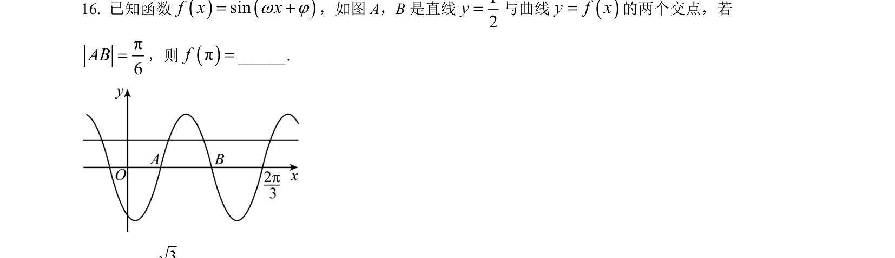
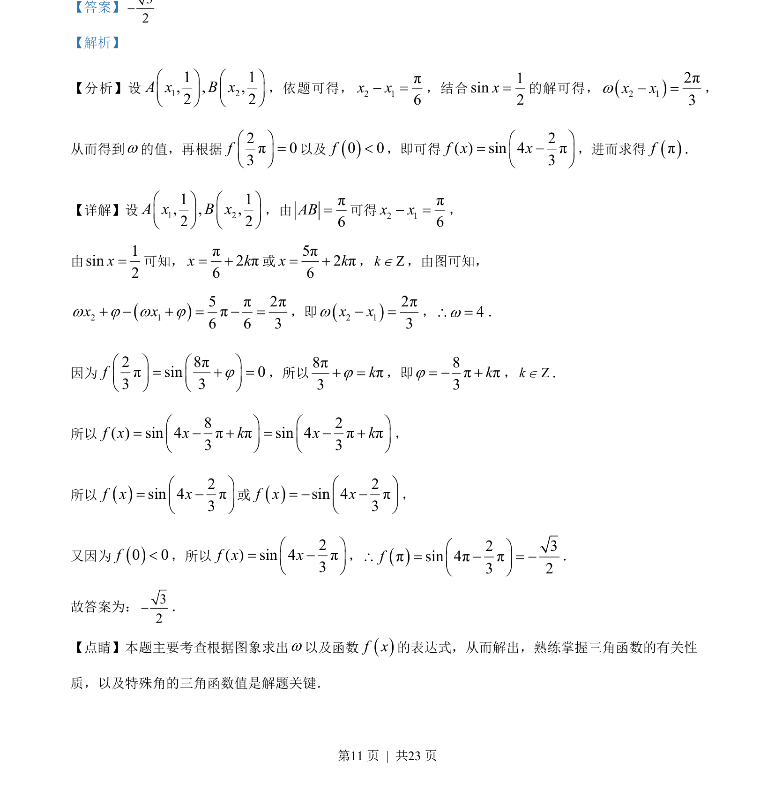
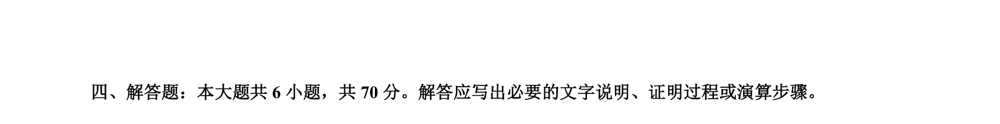

考点：三角函数图象与性质 由图象求解析式 特殊角的三角函数值

根据三角函数图象求解析式参数并计算函数值。


📄 原 PDF 第 11 页：
素材/真题/吉林/2008-2024·（吉林）数学高考真题/2023年高考数学试卷（新课标Ⅱ卷）（解析卷）.pdf
【答案】32 【解析】 【分析】设1 21 1, , ,2 2A x B xæ ö æ öç ÷ ç ÷è ø è ø ，依题可得，2 1π6x x =，结合1sin2x=的解可得，2 12π3x xw =， 从而得到w的值，再根据 2π03fæ ö=ç ÷è ø 以及0 0f<，即可得 2( ) sin 4π3f x xæ ö= ç ÷è ø ，进而求得πf． 【详解】设1 21 1, , ,2 2A x B xæ ö æ öç ÷ ç ÷è ø è ø ，由π6AB=可得2 1π6x x =， 由1sin2x=可知，π2π6x k= 或5π2π6x k= ，ZkÎ，由图可知， 2 15π2ππ6 6 3x xw j w j = =，即2 12π3x xw =，4w\ =． 因为 2 8ππsin 03 3fjæ ö æ ö= =ç ÷ ç ÷è ø è ø ，所以8ππ3kj =，即8ππ3kj= ，ZkÎ． 所以 8 2( ) sin 4ππsin 4ππ3 3f x x k x kæ ö æ ö= = ç ÷ ç ÷è ø è ø ， 所以2sin 4π3f x xæ ö= ç ÷è ø 或2sin 4π3f x xæ ö= ç ÷è ø ， 又因为0 0f<，所以 2( ) sin 4π3f x xæ ö= ç ÷è ø ，2 3πsin 4ππ3 2fæ ö\ = = ç ÷è ø ． 故答案为：32． 【点睛】本题主要考查根据图象求出w以及函数f x的表达式，从而解出，熟练掌握三角函数的有关性 质，以及特殊角的三角函数值是解题关键．